Metric untuk macOS
Perangkat waktu dan frekuensi berjendela untuk macOS dengan metronom bawaan. Metric mengubah tempo menjadi waktu delay, menghitung rasio dan sideband FM, menyinkronkan LFO ke ketukan, dan mentransposisi sampel, dalam jendela yang bisa diubah ukurannya dan bisa dibiarkan terbuka di samping DAW Anda. Siri, Pintasan, dan widget Pusat Pemberitahuan didukung.
- Metronom dengan tap tempo & ketukan visual
- Konverter BPM → ms / Hz (biasa, bertitik, triol)
- Tabel Nada ↔ Frekuensi (108 nada, A4 = 440 Hz)
- Transposisi & Kecepatan, Kalkulator FM, Laju LFO, 32 Harmonik
- Tap tempo di bilah menu, waktu delay dalam ms atau Hz, plus metronom dan nada
- Siri, Pintasan & widget BPM di Pusat Pemberitahuan
Screenshot
Berisi screenshot terang dan gelap yang mengikuti tema situs.


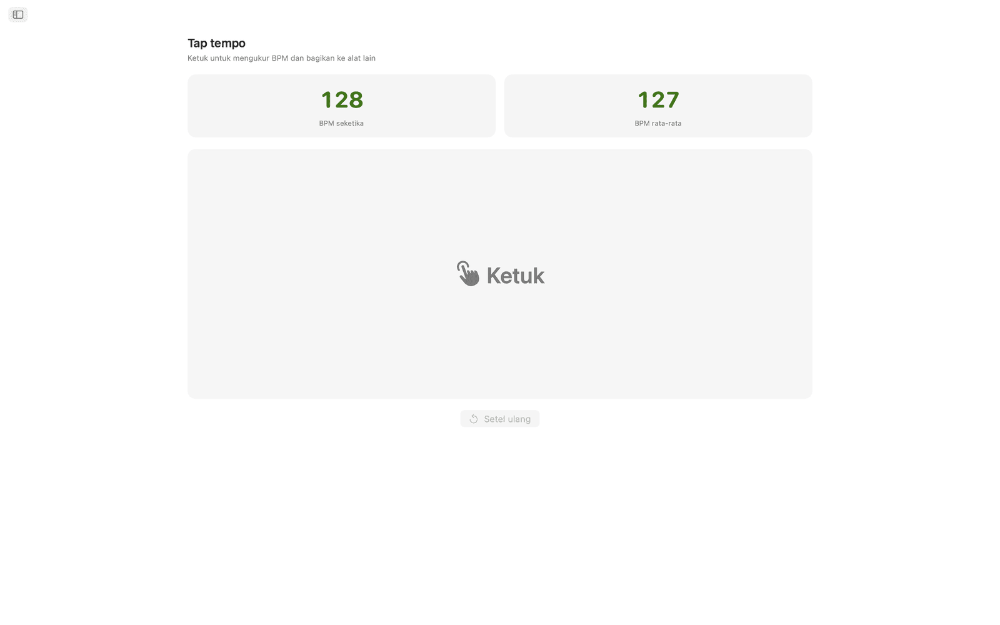
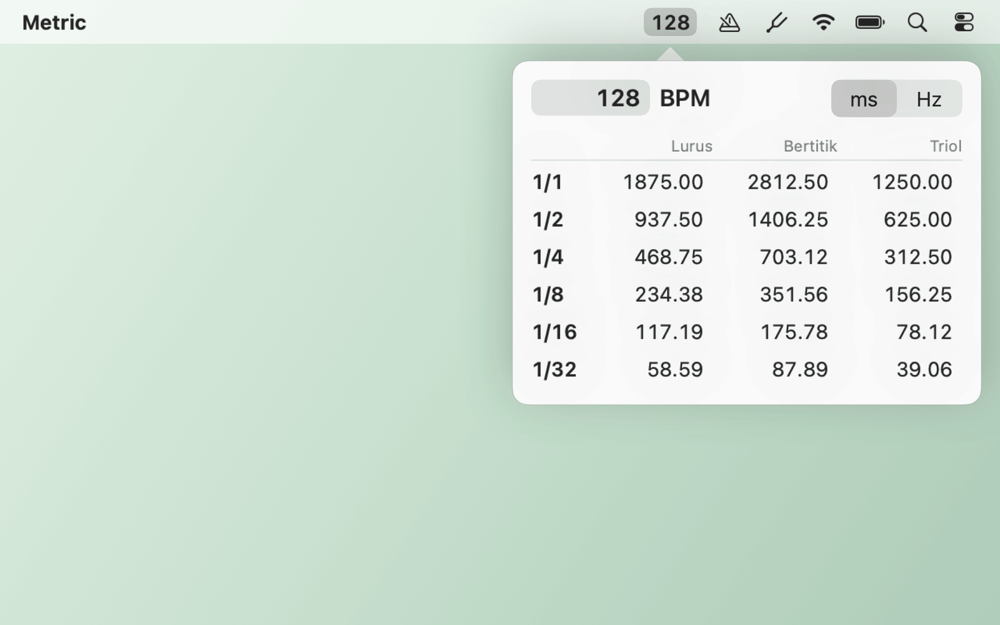
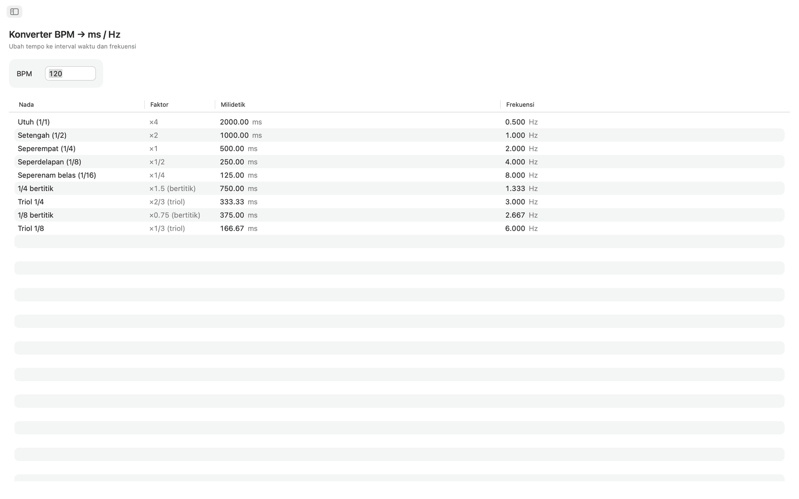
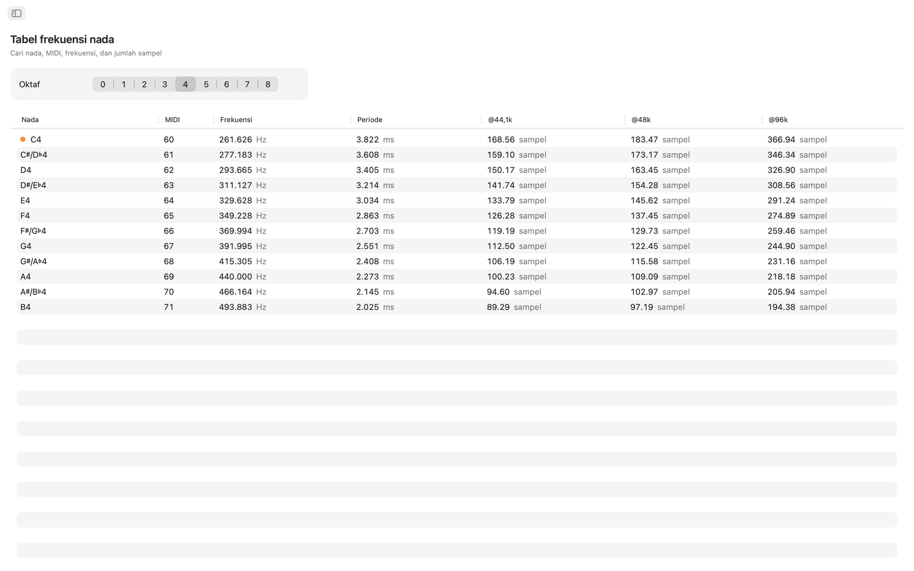
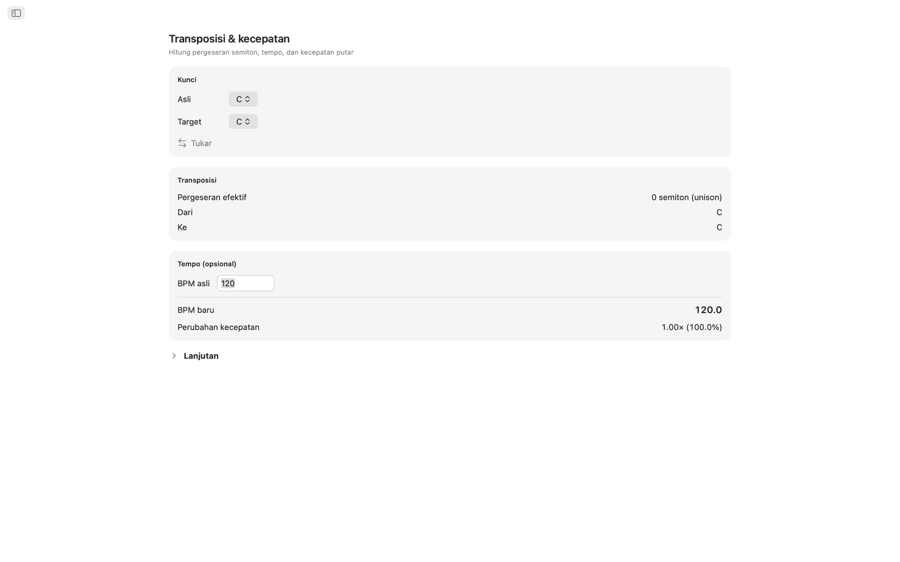
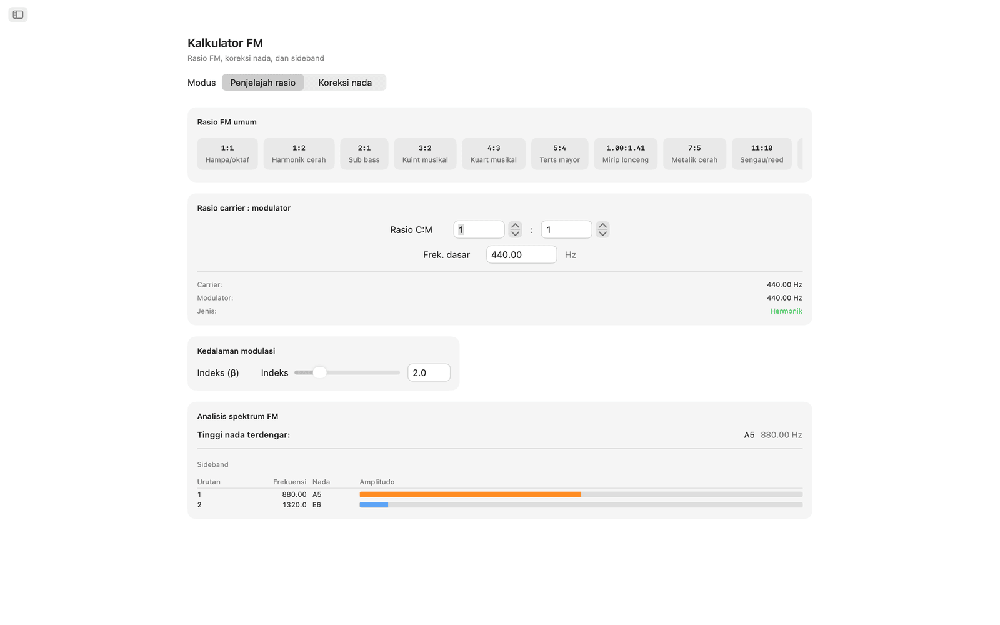
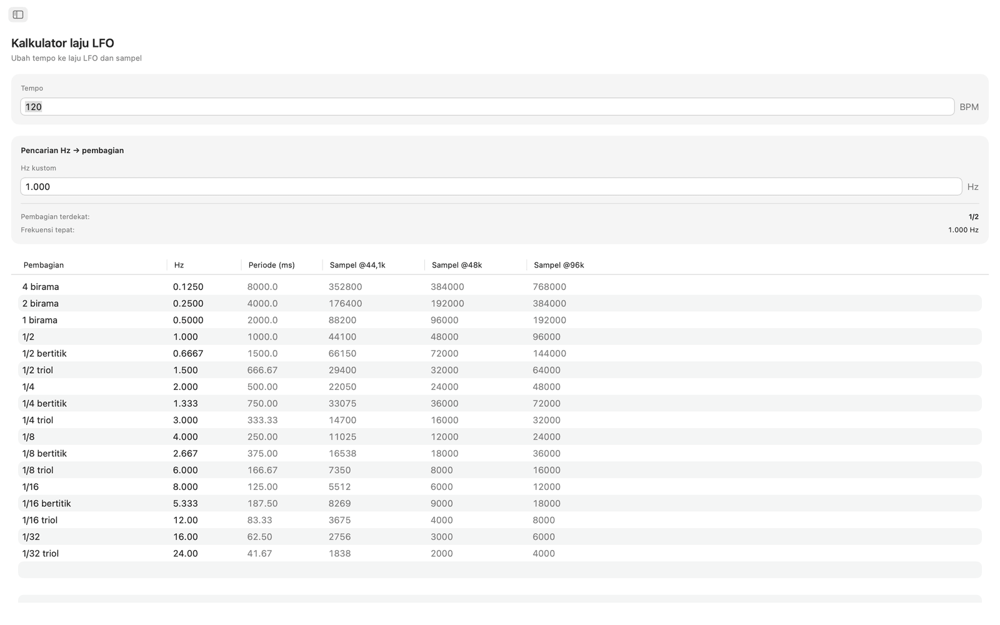
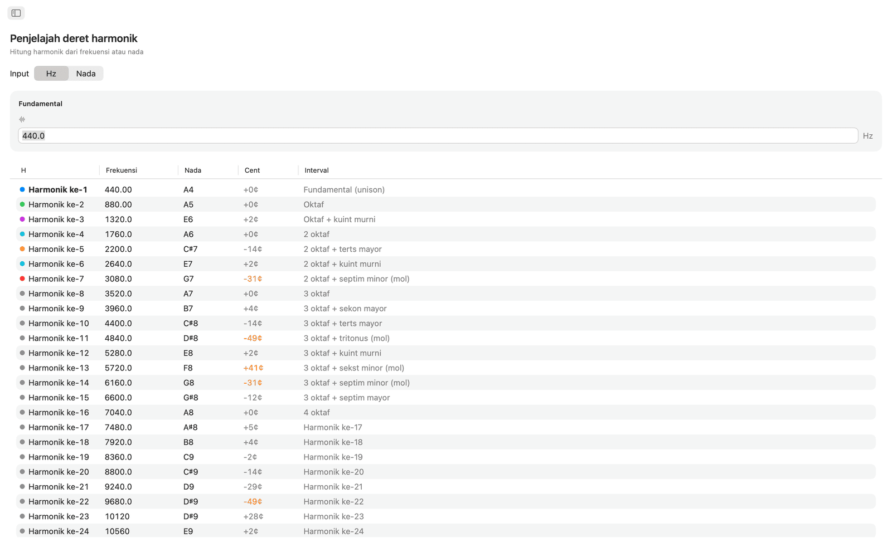
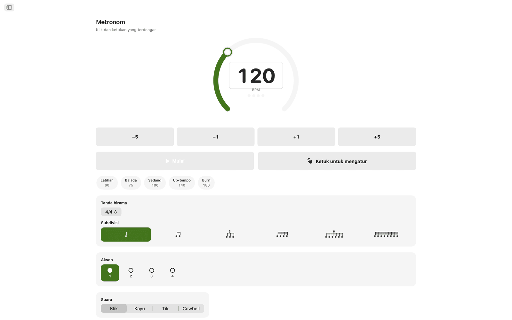
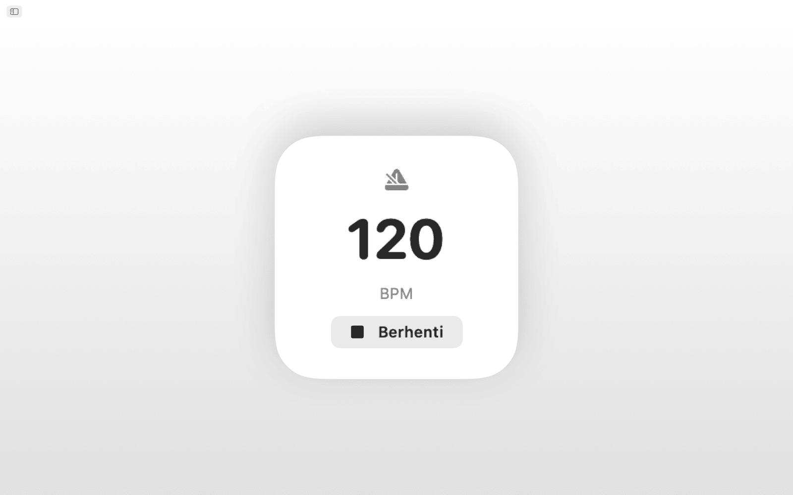
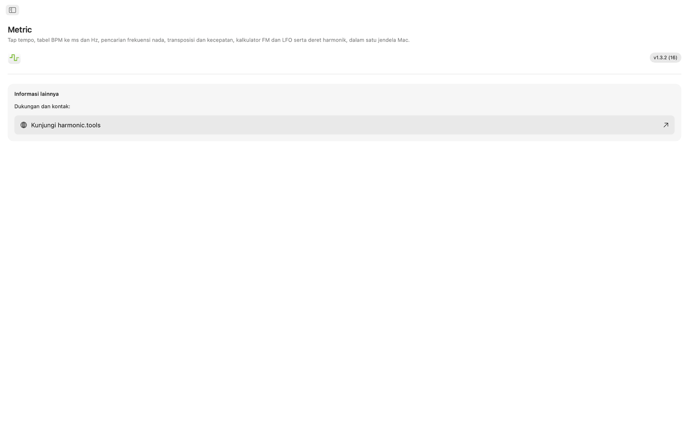
Fitur
- Metronom dilengkapi dial tempo, tap tempo, tanda birama, subdivisi, dan indikator ketukan visual.
- Klik area tap yang besar untuk mengukur tempo. Metric menampilkan BPM dari tap terakhir dan rata-rata bergulir hingga delapan tap, dan salah satu hasil bisa langsung dikirim ke alat Konverter BPM, Transposisi, atau Laju LFO dengan satu klik.
- Konverter BPM → ms / Hz menerima sebuah tempo dan memberi nilai biasa, bertitik, dan triol untuk not penuh, 1/2, 1/4, 1/8, dan 1/16. Setiap baris menampilkan milidetik dan frekuensi dalam Hz, sehingga Anda bisa mengatur delay, pre-delay reverb, atau pewaktuan sidechain tanpa kalkulator.
- Tabel frekuensi nada mencantumkan semua 108 nada kromatik dari C0 sampai B8. Setiap nada menampilkan nomor MIDI, frekuensi dalam Hz, periode dalam milidetik, dan jumlah sampel pada 44,1 kHz, 48 kHz, dan 96 kHz. C tengah diberi tanda. Berdasarkan A4 = 440 Hz.
- Untuk transposisi, pilih kunci asal dan kunci tujuan untuk melihat selisih semiton, nama interval, dan nilai transposisi DAW yang tepat. Tambahkan BPM asal, dan Metric menghitung tempo baru serta rasio kecepatan pemutaran. Penggeser cent (±100) dan penggeser kecepatan yang mencakup dua oktaf (±24 semiton) memungkinkan penyetelan halus.
- Kalkulator FM punya dua mode. Penjelajah Rasio mengatur rasio carrier dan modulator dari frekuensi dasar dan menyediakan sepuluh preset FM, dari oktaf yang hampa (1:1) hingga lonceng inharmonik (1:π). Koreksi Nada bekerja sebaliknya: pilih nada target dan dapatkan frekuensi carrier dan modulator yang tepat. Kedua mode menampilkan tabel sideband dengan hingga sepuluh parsial, lengkap dengan frekuensi, nada terdekat, dan amplitudo berkode warna, yang digerakkan oleh penggeser indeks modulasi.
- Kalkulator laju LFO mengubah BPM apa pun menjadi laju LFO pada 17 pembagian musikal, dari empat birama hingga triol 1/32. Setiap baris menampilkan Hz, periode dalam milidetik, dan sampel per siklus pada 44,1 kHz, 48 kHz, dan 96 kHz. Pencarian balik menerima nilai Hz apa pun dan menemukan pembagian musikal yang paling dekat, dengan selisihnya ditampilkan.
- Penjelajah deret harmonik dimulai dari sebuah frekuensi atau nada apa pun dan menampilkan 32 harmonik pertama beserta frekuensi, nama nada terdekat, simpangan cent, dan label interval. Harmonik orde rendah diberi kode warna, dan simpangan lebih dari 30 cent disorot, sehingga konten inharmonik mudah terlihat.
Tempo dan penyetelan bersama
Tap sebuah tempo sekali, dan alat Konverter BPM, Transposisi, serta Laju LFO memakai BPM langsung yang sama. Frekuensi Nada, Kalkulator FM, dan Harmonik semuanya memakai A4 = 440 Hz.
Siri, Pintasan & widget
Minta Siri untuk memulai atau menghentikan metronom, mengatur BPM, men-tap tempo, mengonversi BPM ke ms, mencari frekuensi sebuah nada, atau mentransposisi tempo. Setiap alat juga tersedia sebagai aksi Pintasan, dan widget BPM menjaga tempo Anda di Pusat Pemberitahuan.
Alat bilah menu
Tap tempo dari bilah menu tanpa membuka aplikasi. Klik kanan untuk waktu delay dalam ms atau Hz, dan ketik tempo apa pun. Item metronom dan nada bersifat opsional, dan tersedia pengaturan hanya bilah menu serta buka saat login.
Di desktop
- Berjalan sepenuhnya offline. Tanpa akun, tanpa iklan, tanpa pelacakan
- Aplikasi macOS asli dengan navigasi bar samping
- Antarmuka mendukung mode gelap dan mengikuti tampilan sistem Anda
- Jumlah sampel pada 44,1 kHz, 48 kHz, dan 96 kHz
- Jendela bisa diubah ukurannya. Biarkan terbuka di samping DAW Anda
Aksesibilitas
Mendukung VoiceOver dan Kontrol Suara, serta dapat dipakai dari keyboard, dengan tombol panah dan Spasi.
Metric gratis dicoba selama 7 hari. Setelah masa percobaan, akses penuh dibeli sekali bayar, tanpa langganan.